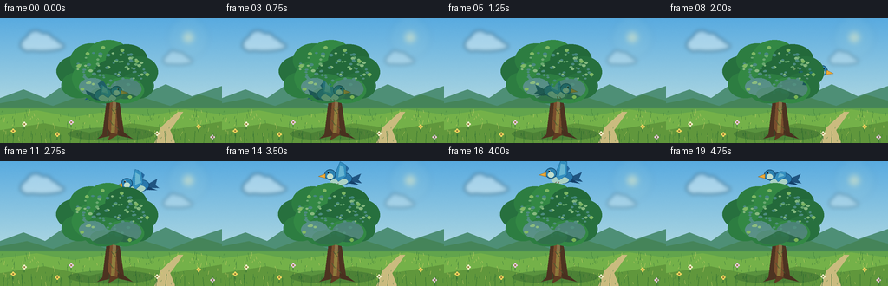
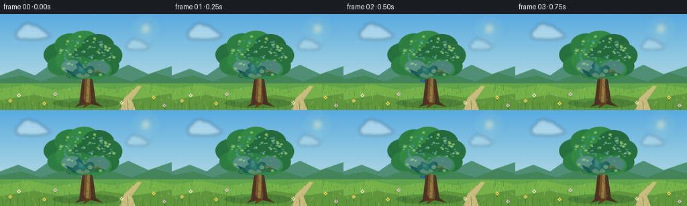
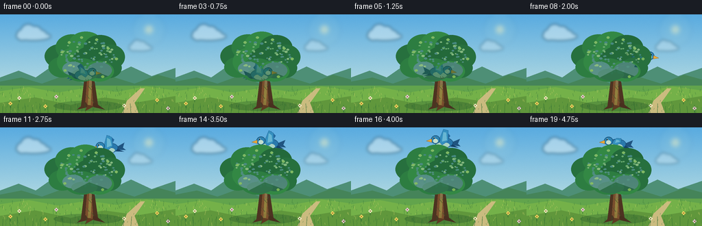

CODING AGENTS AS PIXEL WORLD MODELS
traex/GPT-5.6-Sol · dynamic_spatial_relationship_0051
点击播放 · 原生 RGB 像素
逐轮保存的候选
回放视频、检查图与代码变化。
每份候选均可单独播放。实际图片检查记录在下方工具轨迹中。
候选 01播放与检查图
点击播放 · 原生 RGB 像素


展开代码变化
--- 上一保存版本
+++ 本次保存版本
@@ -0,0 +1,254 @@
+from pathlib import Path
+import math
+import numpy as np
+from PIL import Image, ImageDraw, ImageFilter
+import artifact_io
+
+W, H, N = 256, 144, 20
+S = 3
+rng = np.random.default_rng(8051)
+
+
+def sc(v):
+ return int(round(v*S))
+
+
+def pts(seq):
+ return [(sc(x), sc(y)) for x, y in seq]
+
+
+def ellipse(draw, box, fill, outline=None, width=1):
+ draw.ellipse(tuple(sc(v) for v in box), fill=fill, outline=outline, width=sc(width) if outline else 1)
+
+
+def polygon(draw, xy, fill, outline=None):
+ draw.polygon(pts(xy), fill=fill, outline=outline)
+
+
+def line(draw, xy, fill, width=1, joint='curve'):
+ draw.line(pts(xy), fill=fill, width=sc(width), joint=joint)
+
+
+def make_background(frame):
+ # A quiet late-morning sky with a very slight atmospheric shimmer.
+ hh, ww = H*S, W*S
+ y = np.linspace(0, 1, hh)[:, None, None]
+ top = np.array([89, 171, 224], dtype=float)
+ bottom = np.array([211, 235, 226], dtype=float)
+ arr = top[None, None, :] * (1-y) + bottom[None, None, :] * y
+ arr = np.repeat(arr, ww, axis=1)
+ # subtle fixed film grain, not temporal noise
+ grain_rng = np.random.default_rng(41)
+ grain = grain_rng.normal(0, 1.0, (hh, ww, 1))
+ arr = np.clip(arr + grain, 0, 255).astype(np.uint8)
+ im = Image.fromarray(arr, 'RGB')
+ d = ImageDraw.Draw(im, 'RGBA')
+
+ # soft sun and haze
+ glow = Image.new('RGBA', im.size, (0,0,0,0))
+ gd = ImageDraw.Draw(glow, 'RGBA')
+ for r, a in [(24,8),(17,12),(11,18),(6,120)]:
+ ellipse(gd, (217-r, 22-r, 217+r, 22+r), (255,247,191,a))
+ glow = glow.filter(ImageFilter.GaussianBlur(sc(3)))
+ im = Image.alpha_composite(im.convert('RGBA'), glow)
+ d = ImageDraw.Draw(im, 'RGBA')
+
+ # Distant clouds, broken into soft overlapping puffs.
+ for cx, cy, scale, alpha in [(47,30,1.0,105),(204,48,.68,70)]:
+ cloud = Image.new('RGBA', im.size, (0,0,0,0))
+ cd = ImageDraw.Draw(cloud, 'RGBA')
+ ellipse(cd, (cx-24*scale, cy-4*scale, cx+27*scale, cy+8*scale), (247,252,247,alpha))
+ for ox, oy, rr in [(-15,0,8),(-6,-5,11),(5,-4,9),(14,0,7)]:
+ ellipse(cd, (cx+(ox-rr)*scale,cy+(oy-rr)*scale,cx+(ox+rr)*scale,cy+(oy+rr)*scale), (250,253,249,alpha))
+ cloud = cloud.filter(ImageFilter.GaussianBlur(sc(2.2)))
+ im = Image.alpha_composite(im, cloud)
+ d = ImageDraw.Draw(im, 'RGBA')
+
+ # Far ridges and meadow.
+ polygon(d, [(0,101),(0,92),(27,82),(52,92),(75,76),(105,93),(130,80),(160,91),(191,76),(221,90),(256,78),(256,111)], (78,143,118,210))
+ polygon(d, [(0,105),(0,98),(31,92),(61,101),(94,89),(127,103),(164,91),(196,101),(230,88),(256,95),(256,117)], (69,132,89,235))
+ d.rectangle((0,sc(104),sc(W),sc(H)), fill=(98,164,76,255))
+ # Meadow color bands
+ polygon(d, [(0,112),(42,106),(84,114),(127,107),(170,113),(213,105),(256,111),(256,144),(0,144)], (116,177,73,255))
+ polygon(d, [(0,129),(51,121),(103,132),(151,121),(202,128),(256,119),(256,144),(0,144)], (96,151,60,255))
+
+ # distant path
+ polygon(d, [(202,144),(178,144),(185,126),(197,115),(205,108),(211,108),(204,118),(196,129)], (202,187,127,130))
+
+ # fine fixed meadow texture
+ tex_rng = np.random.default_rng(93)
+ for i in range(210):
+ x = float(tex_rng.uniform(0,W)); yy = float(tex_rng.uniform(108,H))
+ length = float(tex_rng.uniform(1.5,5))
+ col = (55,118,58,int(tex_rng.uniform(45,110))) if i%3 else (207,210,105,80)
+ line(d, [(x,yy),(x+float(tex_rng.uniform(-1,1)),yy-length)], col, .45)
+ # foreground flowers
+ for x,y,c in [(15,130,'#f7d65f'),(28,122,'#f4f0cb'),(66,134,'#f7d65f'),(82,120,'#e9c7e0'),(181,133,'#f4f0cb'),(229,125,'#f7d65f'),(245,137,'#e9c7e0')]:
+ line(d, [(x,y+6),(x,y)], (45,105,49,180), .7)
+ for ang in range(0,360,90):
+ dx=math.cos(math.radians(ang))*1.7; dy=math.sin(math.radians(ang))*1.7
+ ellipse(d,(x+dx-1,y+dy-1,x+dx+1,y+dy+1),c)
+ ellipse(d,(x-.7,y-.7,x+.7,y+.7),'#9c7132')
+ return im
+
+
+def bird_sprite(frame, facing_right=True, angle=0):
+ # Deliberately large, clean bluebird silhouette for readable motion at 256x144.
+ sw, sh = sc(54), sc(46)
+ sp = Image.new('RGBA', (sw,sh), (0,0,0,0))
+ d = ImageDraw.Draw(sp, 'RGBA')
+ cx, cy = 27, 24
+ flap = math.sin(frame * math.pi * .92)
+ wing_tip = 8.0 + 8.5 * (flap+1)/2
+
+ # tail feathers, extending to the left in base/right-facing pose
+ polygon(d, [(15,25),(3,20),(6,27),(2,31),(17,29)], (32,84,128,255))
+ polygon(d, [(16,27),(5,33),(18,31)], (21,65,107,255))
+ # far wing (visible above/below body, creates strong flapping read)
+ if flap >= 0:
+ polygon(d, [(23,24),(17,wing_tip),(24,5+wing_tip*.15),(30,23)], (37,105,160,255))
+ line(d, [(21,21),(20,wing_tip+3)], (154,208,224,210), .7)
+ else:
+ polygon(d, [(21,24),(18,36+(-flap)*4),(27,40),(31,25)], (31,92,145,255))
+ line(d, [(22,27),(22,36+(-flap)*2)], (151,207,222,200), .7)
+ # body and pale belly
+ ellipse(d, (13,18,39,33), (42,121,173,255), (17,70,112,255), .65)
+ ellipse(d, (18,25,38,33), (172,211,196,245))
+ # near wing with feather facets
+ wing_y = 12 - flap*5.5
+ polygon(d, [(20,23),(20,wing_y),(27,6 if flap>0 else 17),(34,23),(29,29)], (52,143,191,255), (19,81,128,255))
+ polygon(d, [(22,22),(23,wing_y+3),(27,10 if flap>0 else 19),(29,24)], (104,183,208,210))
+ # head, cheek, eye and beak
+ ellipse(d, (32,15,45,27), (45,130,177,255), (16,65,103,255), .6)
+ ellipse(d, (35,20,42,26), (197,224,204,245))
+ polygon(d, [(44,20),(52,23),(44,25)], (237,169,54,255), (123,84,28,255))
+ ellipse(d, (39.2,17.6,41.4,19.8), (250,252,241,255))
+ ellipse(d, (39.8,18.1,41.2,19.6), (12,23,29,255))
+ # tiny tucked feet
+ line(d, [(29,31),(30,34),(33,34)], (113,76,39,230), .6)
+ line(d, [(32,31),(34,33)], (113,76,39,210), .6)
+
+ if not facing_right:
+ sp = sp.transpose(Image.Transpose.FLIP_LEFT_RIGHT)
+ if abs(angle) > .1:
+ sp = sp.rotate(angle, resample=Image.Resampling.BICUBIC, expand=False)
+ return sp
+
+
+def tree_layer(frame):
+ layer = Image.new('RGBA', (W*S,H*S), (0,0,0,0))
+ d = ImageDraw.Draw(layer, 'RGBA')
+ sway = math.sin(frame*0.38)*.65
+
+ # soft anchored shadow in meadow
+ ellipse(d, (78,126,178,141), (28,75,40,75))
+
+ # branch silhouette, then trunk (bird passes behind this complete layer)
+ # rear branches
+ line(d, [(131,132),(130,76),(111+sway,56)], (77,53,36,255), 9)
+ line(d, [(131,91),(149+sway,61)], (83,57,37,255), 6)
+ line(d, [(127,84),(99+sway,70)], (92,62,39,255), 4)
+ line(d, [(135,80),(160+sway,72)], (86,57,37,255), 4)
+ # trunk outer and lit center
+ polygon(d, [(118,134),(123,94),(120,72),(129,61),(139,68),(137,93),(143,134)], (77,51,33,255))
+ polygon(d, [(124,133),(127,94),(125,73),(131,65),(135,70),(133,95),(136,134)], (121,78,45,255))
+ polygon(d, [(128,132),(130,98),(129,74),(133,68),(134,93),(132,132)], (160,104,57,170))
+ # roots
+ polygon(d, [(125,128),(112,139),(129,135)], (77,51,33,255))
+ polygon(d, [(136,127),(153,139),(135,135)], (72,48,31,255))
+ polygon(d, [(128,132),(124,141),(137,134)], (94,59,34,255))
+ # bark seams
+ for x1,y1,x2,y2 in [(124,83,129,89),(132,74,128,80),(128,104,133,110),(126,117,130,123),(136,101,133,106),(133,124,137,129)]:
+ line(d,[(x1,y1),(x2,y2)],(59,39,29,160),.7)
+
+ # Dense crown built as organically overlapping lobes.
+ lobes = [
+ (89,61,24,18),(105,48,24,19),(125,44,25,19),(146,48,24,18),(161,62,21,18),
+ (91,77,20,15),(111,69,28,21),(135,68,29,22),(157,78,20,15),(119,81,25,17),(143,83,23,15)
+ ]
+ for i,(cx,cy,rx,ry) in enumerate(lobes):
+ local = sway * (0.35 + (cy<55)*.7) + math.sin(frame*.32+i)*.18
+ basecols=[(39,112,62,255),(45,125,65,255),(51,136,68,255),(35,105,58,255)]
+ col=basecols[i%len(basecols)]
+ ellipse(d,(cx-rx+local,cy-ry,cx+rx+local,cy+ry),col)
+ # crown lower shadow shapes
+ for box,col in [((91,69,122,89),(25,85,49,130)),((127,70,163,93),(23,81,45,150)),((104,79,142,96),(31,94,49,150))]:
+ ellipse(d,box,col)
+ # sunlit leaf clusters / stippled individual leaves
+ leaf_rng=np.random.default_rng(711)
+ for i in range(92):
+ a=leaf_rng.uniform(0,math.tau); rad=math.sqrt(leaf_rng.uniform())
+ x=127+math.cos(a)*rad*41 + sway*(.3+max(0,(65-(52+math.sin(a)*25))/30))
+ y=62+math.sin(a)*rad*25
+ # keep natural crown silhouette and brighter upper-left side
+ rr=leaf_rng.uniform(1.2,2.4)
+ if i%5==0:
+ col=(132,179,79,170)
+ elif y<57 and i%2==0:
+ col=(95,160,73,190)
+ else:
+ col=(29,97,54,145)
+ ellipse(d,(x-rr,y-rr*.65,x+rr,y+rr*.65),col)
+ # selected light leaf sprays around outer crown
+ for x,y in [(91,55),(101,41),(119,34),(141,37),(158,50),(170,65),(95,82),(150,91)]:
+ ox=sway*(1 if y<60 else .4)
+ line(d,[(x,y+3),(x+ox+2,y-1)],(43,101,47,190),.5)
+ ellipse(d,(x+ox-2.5,y-2,x+ox+2,y+1.5),(127,183,80,220))
+ return layer
+
+
+def trajectory(frame):
+ # Hold behind trunk, then emerge on the right and arc to a stable perch in the air above crown.
+ keys = [
+ (0,122.5,86.0),(3,123.2,85.5),(4,124.0,84.8),(5,129.0,82.0),
+ (6,140.0,77.0),(7,154.0,70.0),(8,168.0,61.0),(9,174.0,49.0),
+ (10,169.0,36.0),(11,158.0,26.0),(12,146.0,19.0),(13,136.0,16.0),
+ (19,132.0,16.5)
+ ]
+ for (f0,x0,y0),(f1,x1,y1) in zip(keys[:-1],keys[1:]):
+ if f0 <= frame <= f1:
+ t=(frame-f0)/(f1-f0)
+ t=t*t*(3-2*t)
+ x=x0+(x1-x0)*t; y=y0+(y1-y0)*t
+ if frame>=13:
+ y += math.sin((frame-13)*1.2)*1.3
+ x += math.sin((frame-13)*.65)*1.0
+ return x,y
+ return keys[-1][1],keys[-1][2]
+
+
+def generate_frame(f):
+ im=make_background(f)
+ x,y=trajectory(f)
+ # flight direction determines side profile and modest bank angle
+ if f < 9:
+ facing=True; angle=-6 if f>=5 else 0
+ else:
+ facing=False; angle=7 if f<13 else 0
+ bird=bird_sprite(f, facing_right=facing, angle=angle)
+ # faint airy motion trail only during the quick ascent, all behind the crisp bird
+ if 7 <= f <= 11:
+ trail=Image.new('RGBA',im.size,(0,0,0,0)); td=ImageDraw.Draw(trail,'RGBA')
+ for k,a in [(1,45),(2,22)]:
+ px,py=trajectory(max(0,f-k))
+ line(td,[(px-8,py+3),(px-17,py+5)],(222,239,236,a),1)
+ im=Image.alpha_composite(im,trail)
+ im.alpha_composite(bird,(sc(x)-bird.width//2,sc(y)-bird.height//2))
+ # Tree overlays the bird: early frames visibly read as genuine occlusion/"behind".
+ im=Image.alpha_composite(im,tree_layer(f))
+
+ # small foreground grasses add depth but never touch final bird
+ fg=Image.new('RGBA',im.size,(0,0,0,0)); d=ImageDraw.Draw(fg,'RGBA')
+ for i,xg in enumerate(range(4,256,11)):
+ bend=math.sin(f*.27+i)*1.2
+ line(d,[(xg,144),(xg+bend,134-(i%3)*2)],(35,100,45,140),.8)
+ im=Image.alpha_composite(im,fg)
+ return np.array(im.convert('RGB').resize((W,H),Image.Resampling.LANCZOS),dtype=np.uint8)
+
+
+def main():
+ frames=np.stack([generate_frame(i) for i in range(N)],axis=0)
+ artifact_io.save(frames,Path(__file__).resolve().parent)
+
+if __name__=='__main__':
+ main()
候选 02播放与检查图
点击播放 · 原生 RGB 像素

展开代码变化
--- 上一保存版本
+++ 本次保存版本
@@ -202,8 +202,8 @@
keys = [
(0,122.5,86.0),(3,123.2,85.5),(4,124.0,84.8),(5,129.0,82.0),
(6,140.0,77.0),(7,154.0,70.0),(8,168.0,61.0),(9,174.0,49.0),
- (10,169.0,36.0),(11,158.0,26.0),(12,146.0,19.0),(13,136.0,16.0),
- (19,132.0,16.5)
+ (10,169.0,36.0),(11,158.0,28.0),(12,146.0,22.0),(13,136.0,20.0),
+ (19,132.0,20.5)
]
for (f0,x0,y0),(f1,x1,y1) in zip(keys[:-1],keys[1:]):
if f0 <= frame <= f1:
可观测工具轨迹
实际执行的命令与返回图片。
命令 1exit 0
/bin/bash -lc "ls -la && printf '\\n--- prompt.txt ---\\n' && cat prompt.txt && printf '\\n--- GENERATION_RULES.md ---\\n' && cat GENERATION_RULES.md && printf '\\n--- task_spec.json ---\\n' && cat task_spec.json"
命令 2exit 0
/bin/bash -lc "sed -n '1,240p' artifact_io.py"
命令 3exit 0
/bin/bash -lc "cat > generate.py <<'PY'
from pathlib import Path
import math
import numpy as np
from PIL import Image, ImageDraw, ImageFilter
import artifact_io
W, H, N = 256, 144, 20
S = 3
rng = np.random.default_rng(8051)
def sc(v):
return int(round(v*S))
def pts(seq):
return [(sc(x), sc(y)) for x, y in seq]
def ellipse(draw, box, fill, outline=None, width=1):
draw.ellipse(tuple(sc(v) for v in box), fill=fill, outline=outline, width=sc(width) if outline else 1)
def polygon(draw, xy, fill, outline=None):
draw.polygon(pts(xy), fill=fill, outline=outline)
def line(draw, xy, fill, width=1, joint='curve'):
draw.line(pts(xy), fill=fill, width=sc(width), joint=joint)
def make_background(frame):
# A quiet late-morning sky with a very slight atmospheric shimmer.
hh, ww = H*S, W*S
y = np.linspace(0, 1, hh)[:, None, None]
top = np.array([89, 171, 224], dtype=float)
bottom = np.array([211, 235, 226], dtype=float)
arr = top[None, None, :] * (1-y) + bottom[None, None, :] * y
arr = np.repeat(arr, ww, axis=1)
# subtle fixed film grain, not temporal noise
grain_rng = np.random.default_rng(41)
grain = grain_rng.normal(0, 1.0, (hh, ww, 1))
arr = np.clip(arr + grain, 0, 255).astype(np.uint8)
im = Image.fromarray(arr, 'RGB')
d = ImageDraw.Draw(im, 'RGBA')
# soft sun and haze
glow = Image.new('RGBA', im.size, (0,0,0,0))
gd = ImageDraw.Draw(glow, 'RGBA')
for r, a in [(24,8),(17,12),(11,18),(6,120)]:
ellipse(gd, (217-r, 22-r, 217+r, 22+r), (255,247,191,a))
glow = glow.filter(ImageFilter.GaussianBlur(sc(3)))
im = Image.alpha_composite(im.convert('RGBA'), glow)
d = ImageDraw.Draw(im, 'RGBA')
# Distant clouds, broken into soft overlapping puffs.
for cx, cy, scale, alpha in [(47,30,1.0,105),(204,48,.68,70)]:
cloud = Image.new('RGBA', im.size, (0,0,0,0))
cd = ImageDraw.Draw(cloud, 'RGBA')
ellipse(cd, (cx-24*scale, cy-4*scale, cx+27*scale, cy+8*scale), (247,252,247,alpha))
for ox, oy, rr in [(-15,0,8),(-6,-5,11),(5,-4,9),(14,0,7)]:
ellipse(cd, (cx+(ox-rr)*scale,cy+(oy-rr)*scale,cx+(ox+rr)*scale,cy+(oy+rr)*scale), (250,253,249,alpha))
cloud = cloud.filter(ImageFilter.GaussianBlur(sc(2.2)))
im = Image.alpha_composite(im, cloud)
d = ImageDraw.Draw(im, 'RGBA')
# Far ridges and meadow.
polygon(d, [(0,101),(0,92),(27,82),(52,92),(75,76),(105,93),(130,80),(160,91),(191,76),(221,90),(256,78),(256,111)], (78,143,118,210))
polygon(d, [(0,105),(0,98),(31,92),(61,101),(94,89),(127,103),(164,91),(196,101),(230,88),(256,95),(256,117)], (69,132,89,235))
d.rectangle((0,sc(104),sc(W),sc(H)), fill=(98,164,76,255))
# Meadow color bands
polygon(d, [(0,112),(42,106),(84,114),(127,107),(170,113),(213,105),(256,111),(256,144),(0,144)], (116,177,73,255))
polygon(d, [(0,129),(51,121),(103,132),(151,121),(202,128),(256,119),(256,144),(0,144)], (96,151,60,255))
# distant path
polygon(d, [(202,144),(178,144),(185,126),(197,115),(205,108),(211,108),(204,118),(196,129)], (202,187,127,130))
# fine fixed meadow texture
tex_rng = np.random.default_rng(93)
for i in range(210):
x = float(tex_rng.uniform(0,W)); yy = float(tex_rng.uniform(108,H))
length = float(tex_rng.uniform(1.5,5))
col = (55,118,58,int(tex_rng.uniform(45,110))) if i%3 else (207,210,105,80)
line(d, [(x,yy),(x+float(tex_rng.uniform(-1,1)),yy-length)], col, .45)
# foreground flowers
for x,y,c in [(15,130,'#f7d65f'),(28,122,'#f4f0cb'),(66,134,'#f7d65f'),(82,120,'#e9c7e0'),(181,133,'#f4f0cb'),(229,125,'#f7d65f'),(245,137,'#e9c7e0')]:
line(d, [(x,y+6),(x,y)], (45,105,49,180), .7)
for ang in range(0,360,90):
dx=math.cos(math.radians(ang))*1.7; dy=math.sin(math.radians(ang))*1.7
ellipse(d,(x+dx-1,y+dy-1,x+dx+1,y+dy+1),c)
ellipse(d,(x-.7,y-.7,x+.7,y+.7),'#9c7132')
return im
def bird_sprite(frame, facing_right=True, angle=0):
# Deliberately large, clean bluebird silhouette for readable motion at 256x144.
sw, sh = sc(54), sc(46)
sp = Image.new('RGBA', (sw,sh), (0,0,0,0))
d = ImageDraw.Draw(sp, 'RGBA')
cx, cy = 27, 24
flap = math.sin(frame * math.pi * .92)
wing_tip = 8.0 + 8.5 * (flap+1)/2
# tail feathers, extending to the left in base/right-facing pose
polygon(d, [(15,25),(3,20),(6,27),(2,31),(17,29)], (32,84,128,255))
polygon(d, [(16,27),(5,33),(18,31)], (21,65,107,255))
# far wing (visible above/below body, creates strong flapping read)
if flap >= 0:
polygon(d, [(23,24),(17,wing_tip),(24,5+wing_tip*.15),(30,23)], (37,105,160,255))
line(d, [(21,21),(20,wing_tip+3)], (154,208,224,210), .7)
else:
polygon(d, [(21,24),(18,36+(-flap)*4),(27,40),(31,25)], (31,92,145,255))
line(d, [(22,27),(22,36+(-flap)*2)], (151,207,222,200), .7)
# body and pale belly
ellipse(d, (13,18,39,33), (42,121,173,255), (17,70,112,255), .65)
ellipse(d, (18,25,38,33), (172,211,196,245))
# near wing with feather facets
wing_y = 12 - flap*5.5
polygon(d, [(20,23),(20,wing_y),(27,6 if flap>0 else 17),(34,23),(29,29)], (52,143,191,255), (19,81,128,255))
polygon(d, [(22,22),(23,wing_y+3),(27,10 if flap>0 else 19),(29,24)], (104,183,208,210))
# head, cheek, eye and beak
ellipse(d, (32,15,45,27), (45,130,177,255), (16,65,103,255), .6)
ellipse(d, (35,20,42,26), (197,224,204,245))
polygon(d, [(44,20),(52,23),(44,25)], (237,169,54,255), (123,84,28,255))
ellipse(d, (39.2,17.6,41.4,19.8), (250,252,241,255))
ellipse(d, (39.8,18.1,41.2,19.6), (12,23,29,255))
# tiny tucked feet
line(d, [(29,31),(30,34),(33,34)], (113,76,39,230), .6)
line(d, [(32,31),(34,33)], (113,76,39,210), .6)
if not facing_right:
sp = sp.transpose(Image.Transpose.FLIP_LEFT_RIGHT)
if abs(angle) > .1:
sp = sp.rotate(angle, resample=Image.Resampling.BICUBIC, expand=False)
return sp
def tree_layer(frame):
layer = Image.new('RGBA', (W*S,H*S), (0,0,0,0))
d = ImageDraw.Draw(layer, 'RGBA')
sway = math.sin(frame*0.38)*.65
# soft anchored shadow in meadow
ellipse(d, (78,126,178,141), (28,75,40,75))
# branch silhouette, then trunk (bird passes behind this complete layer)
# rear branches
line(d, [(131,132),(130,76),(111+sway,56)], (77,53,36,255), 9)
line(d, [(131,91),(149+sway,61)], (83,57,37,255), 6)
line(d, [(127,84),(99+sway,70)], (92,62,39,255), 4)
line(d, [(135,80),(160+sway,72)], (86,57,37,255), 4)
# trunk outer and lit center
polygon(d, [(118,134),(123,94),(120,72),(129,61),(139,68),(137,93),(143,134)], (77,51,33,255))
polygon(d, [(124,133),(127,94),(125,73),(131,65),(135,70),(133,95),(136,134)], (121,78,45,255))
polygon(d, [(128,132),(130,98),(129,74),(133,68),(134,93),(132,132)], (160,104,57,170))
# roots
polygon(d, [(125,128),(112,139),(129,135)], (77,51,33,255))
polygon(d, [(136,127),(153,139),(135,135)], (72,48,31,255))
polygon(d, [(128,132),(124,141),(137,134)], (94,59,34,255))
# bark seams
for x1,y1,x2,y2 in [(124,83,129,89),(132,74,128,80),(128,104,133,110),(126,117,130,123),(136,101,133,106),(133,124,137,129)]:
line(d,[(x1,y1),(x2,y2)],(59,39,29,160),.7)
# Dense crown built as organically overlapping lobes.
lobes = [
(89,61,24,18),(105,48,24,19),(125,44,25,19),(146,48,24,18),(161,62,21,18),
(91,77,20,15),(111,69,28,21),(135,68,29,22),(157,78,20,15),(119,81,25,17),(143,83,23,15)
]
for i,(cx,cy,rx,ry) in enumerate(lobes):
local = sway * (0.35 + (cy<55)*.7) + math.sin(frame*.32+i)*.18
basecols=[(39,112,62,255),(45,125,65,255),(51,136,68,255),(35,105,58,255)]
col=basecols[i%len(basecols)]
ellipse(d,(cx-rx+local,cy-ry,cx+rx+local,cy+ry),col)
# crown lower shadow shapes
for box,col in [((91,69,122,89),(25,85,49,130)),((127,70,163,93),(23,81,45,150)),((104,79,142,96),(31,94,49,150))]:
ellipse(d,box,col)
# sunlit leaf clusters / stippled individual leaves
leaf_rng=np.random.default_rng(711)
for i in range(92):
a=leaf_rng.uniform(0,math.tau); rad=math.sqrt(leaf_rng.uniform())
x=127+math.cos(a)*rad*41 + sway*(.3+max(0,(65-(52+math.sin(a)*25))/30))
y=62+math.sin(a)*rad*25
# keep natural crown silhouette and brighter upper-left side
rr=leaf_rng.uniform(1.2,2.4)
if i%5==0:
col=(132,179,79,170)
elif y<57 and i%2==0:
col=(95,160,73,190)
else:
col=(29,97,54,145)
ellipse(d,(x-rr,y-rr*.65,x+rr,y+rr*.65),col)
# selected light leaf sprays around outer crown
for x,y in [(91,55),(101,41),(119,34),(141,37),(158,50),(170,65),(95,82),(150,91)]:
ox=sway*(1 if y<60 else .4)
line(d,[(x,y+3),(x+ox+2,y-1)],(43,101,47,190),.5)
ellipse(d,(x+ox-2.5,y-2,x+ox+2,y+1.5),(127,183,80,220))
return layer
def trajectory(frame):
# Hold behind trunk, then emerge on the right and arc to a stable perch in the air above crown.
keys = [
(0,122.5,86.0),(3,123.2,85.5),(4,124.0,84.8),(5,129.0,82.0),
(6,140.0,77.0),(7,154.0,70.0),(8,168.0,61.0),(9,174.0,49.0),
(10,169.0,36.0),(11,158.0,26.0),(12,146.0,19.0),(13,136.0,16.0),
(19,132.0,16.5)
]
for (f0,x0,y0),(f1,x1,y1) in zip(keys[:-1],keys[1:]):
if f0 <= frame <= f1:
t=(frame-f0)/(f1-f0)
t=t*t*(3-2*t)
x=x0+(x1-x0)*t; y=y0+(y1-y0)*t
if frame>=13:
y += math.sin((frame-13)*1.2)*1.3
x += math.sin((frame-13)*.65)*1.0
return x,y
return keys[-1][1],keys[-1][2]
def generate_frame(f):
im=make_background(f)
x,y=trajectory(f)
# flight direction determines side profile and modest bank angle
if f < 9:
facing=True; angle=-6 if f>=5 else 0
else:
facing=False; angle=7 if f<13 else 0
bird=bird_sprite(f, facing_right=facing, angle=angle)
# faint airy motion trail only during the quick ascent, all behind the crisp bird
if 7 <= f <= 11:
trail=Image.new('RGBA',im.size,(0,0,0,0)); td=ImageDraw.Draw(trail,'RGBA')
for k,a in [(1,45),(2,22)]:
px,py=trajectory(max(0,f-k))
line(td,[(px-8,py+3),(px-17,py+5)],(222,239,236,a),1)
im=Image.alpha_composite(im,trail)
im.alpha_composite(bird,(sc(x)-bird.width//2,sc(y)-bird.height//2))
# Tree overlays the bird: early frames visibly read as genuine occlusion/\"behind\".
im=Image.alpha_composite(im,tree_layer(f))
# small foreground grasses add depth but never touch final bird
fg=Image.new('RGBA',im.size,(0,0,0,0)); d=ImageDraw.Draw(fg,'RGBA')
for i,xg in enumerate(range(4,256,11)):
bend=math.sin(f*.27+i)*1.2
line(d,[(xg,144),(xg+bend,134-(i%3)*2)],(35,100,45,140),.8)
im=Image.alpha_composite(im,fg)
return np.array(im.convert('RGB').resize((W,H),Image.Resampling.LANCZOS),dtype=np.uint8)
def main():
frames=np.stack([generate_frame(i) for i in range(N)],axis=0)
artifact_io.save(frames,Path(__file__).resolve().parent)
if __name__=='__main__':
main()
PY
python generate.py
ls -lh pixels.npz inspection.png frames/00.png frames/19.png"命令 4exit 1
/bin/bash -lc "python generate.py >/tmp/gen.log 2>&1 && python - <<'PY'
import numpy as np
from PIL import Image
from pathlib import Path
z=np.load('pixels.npz')['pixels']
assert z.shape==(144,256,20),z.shape
assert all(Image.open(f'frames/{i:02d}.png').mode=='RGB' and Image.open(f'frames/{i:02d}.png').size==(256,144) for i in range(20))
print('verified',z.shape,len(list(Path('frames').glob('*.png'))),Path('pixels.npz').stat().st_size)
PY
cat /tmp/gen.log"命令 5exit 0
/bin/bash -lc "python generate.py >.tmp/gen.log 2>&1 && python - <<'PY'
import numpy as np
from PIL import Image
from pathlib import Path
z=np.load('pixels.npz')['pixels']
assert z.shape==(144,256,20),z.shape
assert all(Image.open(f'frames/{i:02d}.png').mode=='RGB' and Image.open(f'frames/{i:02d}.png').size==(256,144) for i in range(20))
print('verified',z.shape,len(list(Path('frames').glob('*.png'))),Path('pixels.npz').stat().st_size)
PY
cat .tmp/gen.log"视觉工具实际返回图片 1

保存候选 2 份；完成命令 5 次；可验证图片返回 1 张。原始 API 响应与完整日志保留在本地。